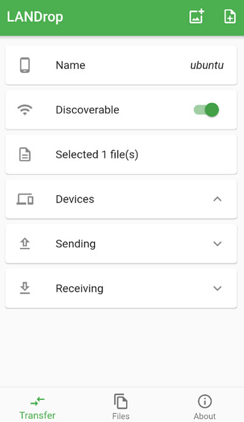
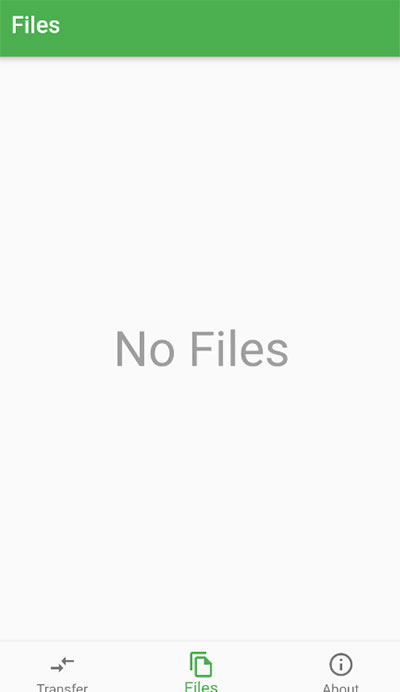

LANDrop 快问快答：AirDrop 的跨平替到底行不行
LANDrop 是什么、要不要装、怎么装、速度能到多少、Wi-Fi 被隔离时怎么办——一篇问答速查讲透这款跨平台文件互传工具。
整理一篇关于 LANDrop 的快问快答，把常见的疑问按问答形式串起来，扫一眼就能找到你关心的那个。
LANDrop 到底是什么，谁需要它
LANDrop 是一款跨平台的 AirDrop 替代品——iPhone 之间互传用 AirDrop 很丝滑，但安卓和 Windows 用户一直没有一个真正好用的跨平台方案，LANDrop 就是冲着这个缺口来的，可以去它的官网看看完整的支持平台列表。支持 iOS、Android、macOS、Windows、Linux 五大平台，所有传输都走点对点直连，不经过任何第三方服务器，零流量也零上传等待。
你如果同时用 iPhone 和 Windows 电脑、或者家里有安卓手机和 Mac，就属于 LANDrop 的核心用户群。不用再开微信文件传输助手慢慢等、也不用手动开热点让两台设备凑一起。

怎么装，会不会有广告弹窗
桌面端和移动端都能从LANDrop下载页拿到，macOS 走 App Store、Windows 有 MSIX 安装包、iOS 和 Android 也都有正规上架渠道。桌面端安装后会在系统托盘常驻，手机端装完点开就是一个简洁的文件选择界面。
LANDrop 完全免费开源，没有广告、没有会员订阅、也不弹窗求你升级。整个项目的代码都托管在公开仓库里，想翻源码验证有没有偷传数据随时可以查。
核心怎么用，拖文件就完事了吗
对，核心操作就是拖。桌面端把一个文件或文件夹拖进窗口，就能看到同一网络下所有在线的 LANDrop 设备——点一下目标设备，对方屏幕上会弹出接收确认，点接受就开始传。手机端的操作是反过来的：选好要发的文件，LANDrop 自动扫描附近设备，列表里点一下就行。
传输过程中你能看到实时速度和剩余时间，传完会叮一声。文件夹传输从 v2.6.0 开始支持，整个目录结构原样保留到对方那边，不用先打包 zip 再拆。
速度能到多少，和 AirDrop 比差远吗
速度取决于你的网络条件，LANDrop 本身不设限。2.4GHz Wi-Fi 下一般是 10~30 MB/s，5GHz 能冲到 50~150 MB/s，千兆有线链路甚至能稳定跑 100 MB/s 以上，几乎是线速。AirDrop 在同频段下的速度上限和 LANDrop 差不多，毕竟两者底层都是点对点局域网传输，限速的是路由器不是软件。
有个细节值得提：很多人的路由器把 2.4 和 5GHz 合成了一个 SSID，LANDrop 的发现没问题，但实际传输在信号弱的时候会被路由器降回 2.4GHz。想稳定跑高速，最稳的做法是在路由器后台把 5GHz SSID 单独拆出来，两台设备都强制连那个。
一定要同 Wi-Fi 吗，朋友聚会各自用蜂窝怎么办
不一定。v2.7.0 之后 LANDrop 引入了 WebRTC Nearby Sharing，只要两台设备物理位置够近，哪怕各自连的是不同运营商的蜂窝数据、或者公共 Wi-Fi 被做了客户端隔离导致组播不通，LANDrop 也能发现对方并建立点对点连接。
实际场景覆盖：会议室里同事们连不同企业 Wi-Fi 互传文件、朋友聚会各自 4G/5G 互发照片、咖啡馆 Wi-Fi 做了隔离但你想给对面的人发资料。Nearby Sharing 的速度不如同局域网的 mDNS 组播快，一般在 1~20 MB/s，但胜在不挑网络。
Wi-Fi 被 NAT 隔离连 Nearby 也失败怎么办
LANDrop 还有一条兜底通道：手动 IP 地址连接。当 mDNS 组播和 WebRTC Nearby 都因为 NAT 类型太严格（比如运营商级 NAT 或对称 NAT）而发现失败时，你可以在 LANDrop 里切到手动 IP 模式，直接输入对方设备的局域网 IP 地址发起连接。
这个功能在 v2.7.0 里和 Nearby Sharing 一起推出，相当于把最后一块拼图补上了——发现机制全失效时，手动 IP 是唯一能打通的通道。具体的 NAT 穿透细节和手动 IP 的操作步骤，LANDrop文档里有更详细的说明。

文件夹太大或路径太怪会出事吗
大多数情况不会，但有几种边缘场景 LANDrop 会主动处理或拒绝。Windows 的 $RECYCLE.BIN、macOS 的 .DS_Store 这类系统隐藏文件，LANDrop 会自动跳过不传输，免得把垃圾文件带到对方那边。目标存储空间不够时也会提前报错而不是传到一半卡住。
文件名冲突是另一个常见场景——LANDrop 有自动重命名机制，收到同名文件时会在文件名后面加序号而不是直接覆盖。跨平台传的时候如果路径里有极端特殊字符（比如某些 Linux 允许但 Windows 不允许的字符），也可能被拒绝，不过这种情况非常少见，日常使用基本碰不到。
和同类工具比，LANDrop 的优势在哪
市面上的跨平台互传工具不少，Snapdrop、Send Anywhere、LocalSend 都是常见选项。LANDrop 的核心优势有三点：一是完全免费开源没有任何商业门槛；二是三条传输通道并行（LAN 组播 + WebRTC Nearby + 手动 IP），覆盖面比只走局域网的工具有弹性得多；三是跨平台覆盖完整，Linux 桌面端也有官方包。
LocalSend 是另一个值得比较的选择，两者定位很接近。LANDrop 在 Nearby Sharing 这块走得更远，v2.7.0 之后不需要同网络就能发现对方；LocalSend 的优势则在于界面更偏向极简。选哪个更多是个人偏好问题。
最后一句
如果你同时用多平台设备、讨厌微信传文件的速度限制和压缩，LANDrop 值得装——免费、开源、跨平台、三条传输通道兜底，基本把日常互传该踩的坑都填上了。上面提到的所有细节和版本演进资料，在 GitHub、Gitee 和 GitCode 三个仓库都能找到，哪边访问顺畅走哪边。